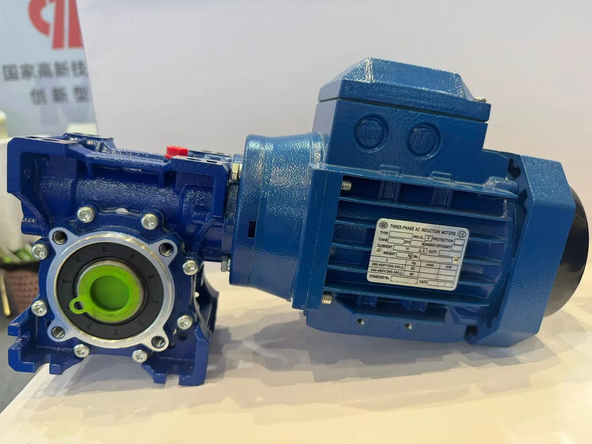

Published August 18, 2026 · Reviewed by SMK Transmission

Three-Phase Motor Current Formula
For a balanced three-phase AC motor, estimated rated line current is I (A) = Pout (W) / [1.732 x V (V) x efficiency x PF]. Pout is mechanical output power, V is line-to-line voltage, efficiency is the motor efficiency and PF is power factor. If efficiency and power factor are unknown, obtain the motor data sheet instead of treating kW divided by voltage as an accurate current.
Worked Example: 2.2 kW Motor at 400 V
Assume 2.2 kW output, 400 V, 82% efficiency and 0.78 power factor:
I = 2,200 / (1.732 x 400 x 0.82 x 0.78) = approximately 4.96 A
The estimated current is about 5 A. The actual nameplate value may differ because efficiency and power factor vary by motor design and load.
Worked Example: 7.5 kW Motor at 380 V
Assume 7.5 kW output, 380 V, 88% efficiency and 0.84 power factor:
I = 7,500 / (1.732 x 380 x 0.88 x 0.84) = approximately 15.4 A
This is a preliminary full-load estimate. Starting current may be several times higher and must be evaluated separately.
| Input data | Why it matters | Where to verify |
|---|---|---|
| Rated output power | Defines useful shaft power, not electrical input power | Motor nameplate and data sheet |
| Line voltage and frequency | Affects winding connection, speed and current | Site supply and motor nameplate |
| Efficiency | Accounts for electrical and mechanical losses | Manufacturer performance data |
| Power factor | Accounts for the voltage-current phase relationship | Manufacturer performance data |
| Starting method | Determines starting current and acceleration | Starter, VFD and machine requirements |
| Duty and ambient conditions | Affects thermal loading and permissible output | Application specification |
Why Calculated and Nameplate Current Differ
The formula is only as accurate as its inputs. Efficiency and power factor change with motor size, design and load. Voltage tolerance, winding connection and frequency also matter. Use calculated current for early comparison and rated nameplate current for final equipment coordination.
Full-Load Current Is Not Starting Current
A direct-on-line motor can draw much higher current during acceleration than during normal operation. Star-delta starting, soft starters and variable-frequency drives change the current and torque profile. Confirm that the driven gearbox and machine can accelerate without excessive time or repeated trips.
How to Use Current When Matching a Motor and Gearbox
- Determine required output speed and continuous torque.
- Select the gearbox ratio and verify output torque and service factor.
- Calculate required mechanical power, including gearbox efficiency.
- Select motor power, speed, voltage, frequency, duty and mounting.
- Compare estimated current with the actual motor nameplate.
- Verify cables and protection with a qualified electrical designer and applicable code.
Common Calculation Mistakes
- Using motor output kW as electrical input power.
- Omitting efficiency or power factor.
- Using phase voltage instead of line-to-line voltage.
- Confusing full-load current with starting current.
- Setting protection from a generic table without checking the nameplate.
- Ignoring ambient temperature, altitude, starts or duty.
Frequently Asked Questions
How do I calculate three-phase motor current from kW?
Convert kW to watts and divide by 1.732 x line voltage x efficiency x power factor. Verify the result against the selected motor's nameplate.
Is three-phase motor current lower than single-phase motor current?
For comparable output power, a three-phase system generally distributes power more effectively, but comparison must use the actual voltage, efficiency and power factor.
Can I size an overload relay from this formula?
Do not rely on this formula alone. Follow the motor nameplate, applicable electrical standards and the protection-device instructions.